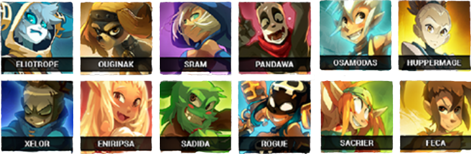
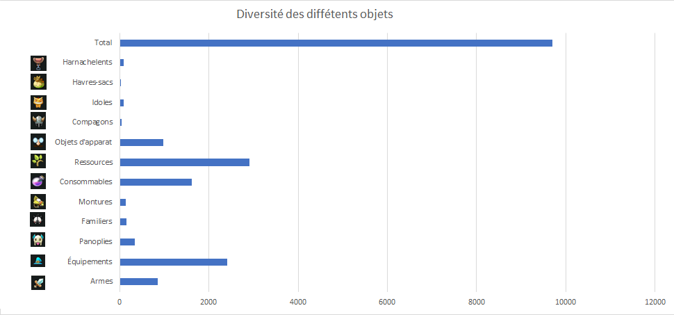

Dofus est un jeu MMORPG qui est apparu le 1 septembre 2004 par la boite Ankama qui est une entreprise française.Elle a été créée le 15 mai 2001. Dofus est le MMORPG le plus connu en France, bien sûr, Ankama ne s’est pas arrêté là. En voyant le succès du jeu, ils ont mis en ventes des BD, Dessins animé ainsi que des produits dérivés autour de l’univers de Dofus. Il y a constamment des mises à jour et des nouveautés.
Dofus est aussi connu pour sa diversité. En effet, vous avez une grande variété de choix avec pas moins de 18 classes de personnages pour satisfaire un maximum de joueur, et bien sûr modifiables selon vos préférences ! une petite suptilité, c'est que pour la plupart des classes,si l'on inverse les noms, cela forme un jeu de mot marrant ou une référence.
Par ailleurs, la diversité des objets est impressionnante.En effet, il y a plus de 9000 objets différents ce qui offre énormement de possibilité.De plus, chaques équipements possèdent ces propres caractéristiques (d'une valeur aléatoires entre un minimum et un maximum), ainsi que des optimisations stylistiques pour cibler encore plus de monde.
{kind=link}
Mais la difference se fait surtout au niveau sonore, une grande parti des musiques de dofus 1.29 a été remastériser,ainsi que de nouvelles musiques ont été rajoutées pour une plus grande diversité.
(Attention !!! pas que le son soit trop fort dans vos oreilles !!!)
Voila un extrait de la version de Dofus 1.29 (Avant) :
et voici un extrait de la version de Dofus 2.x (Après) :
Il y a également un travail de recherche sur les quêtes, notamment sur leurs nombres mais aussi sur l’humour de leurs noms,ainsi que les noms des personnages qui les présentent, le plus souvent le noms des personnages est associé à la quête en question.
{kind=link}
{kind=link}
On voit ici qu'ils ont voulu marquer les esprits avec une histoire impressionnante et intéressante tout en représentant leur humour à travers leur jeu.